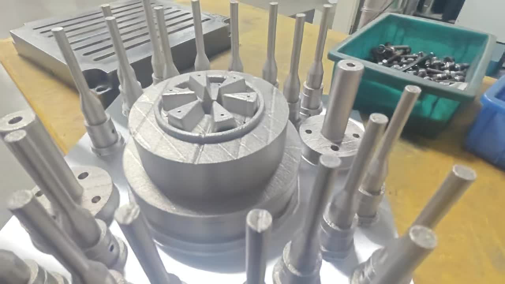

1. Why Packaging Is the Highest-ROI Application for Conformal Cooling
Every injection molding segment benefits from conformal cooling, but packaging delivers the fastest payback — often measured in weeks rather than months. Three factors converge to make packaging the ideal application:

A single 48-cavity beverage closure mold running 24/7 at a 4-second cycle produces approximately 10.4 million closures per year. At these volumes, every tenth of a second saved translates into hundreds of thousands of additional parts — and proportional revenue gains. Compare this to automotive volumes (0.5–2M shots/year) and the payback acceleration becomes clear.
Packaging parts have wall thicknesses between 0.3 mm and 1.2 mm. At these dimensions, injection and packing phases complete in under 1 second, making cooling the overwhelming cycle-time driver. Any technology that reduces cooling time has a disproportionate impact on total cycle. Read more about cycle time reduction mechanics.
A 1-second cycle time reduction on a 48-cavity mold at 85% OEE produces 4.1 million additional parts per year. The same improvement on a 96-cavity tool doubles that to 8.2 million parts. No other molding segment routinely runs cavity counts this high, which is why packaging consistently delivers the highest absolute ROI from conformal cooling.
2. Packaging Applications: Closures, Caps, Containers & Preforms
Conformal cooling addresses specific thermal challenges in each major packaging category. The table below summarises the key applications, typical cavity counts, and expected performance improvements:
| Application | Typical Material | Cavities | Wall (mm) | Conv. Cycle | Conformal Cycle | Reduction |
|---|---|---|---|---|---|---|
| 28mm Beverage Closure | HDPE | 48–96 | 0.8–1.0 | 4.2 s | 3.1 s | 26% |
| Flip-Top Cap (shampoo) | PP | 16–32 | 0.9–1.2 | 7.8 s | 5.5 s | 29% |
| Thin-Wall Food Container | PP | 4–8 | 0.35–0.55 | 3.6 s | 2.7 s | 25% |
| PET Preform (28mm neck) | PET | 48–96 | 2.5–3.5 | 9.2 s | 6.8 s | 26% |
| Cosmetic Jar Cap | ABS / SAN | 16–32 | 1.2–1.8 | 12.5 s | 8.8 s | 30% |
| Sport Cap (push-pull) | PP + TPE | 8–16 | 1.0–1.5 | 10.4 s | 7.6 s | 27% |
Beverage Closures: The Benchmark Application
Beverage closures are the single largest volume application in packaging injection molding. A typical 28mm HDPE closure has a threaded body, tamper-evident (TE) band with bridges, and a sealing liner surface — all of which create non-uniform wall thicknesses that conventional drilled cooling cannot address evenly.
The TE band area is the critical thermal bottleneck. Conventional baffled cooling circuits are positioned 8–12 mm from the band geometry, creating a hot spot that forces operators to extend cooling time by 0.8–1.2 seconds to prevent deformation during unscrewing. Conformal channels routed within 2–3 mm of the TE band geometry extract heat 3–4x faster, eliminating the bottleneck entirely.
PET Preforms: Gate Area Is Everything
PET preform molds present a unique cooling challenge: the gate area at the base of the preform accumulates the highest heat concentration due to the thickest material section (3–4 mm) and direct contact with the hot runner nozzle tip. Conventional cooling in this area relies on a single bubbler tube — inadequate for the heat load.
Conformal cooling wraps spiral channels around the gate pad area, reducing gate vestige temperature from 85–95°C to 55–65°C. This eliminates the crystallinity haze that causes preform rejection and enables cycle time reductions of 2–3 seconds on standard 48-cavity preform tools. For more on channel design principles, see our design guide.
Thin-Wall Food Containers
Thin-wall containers (0.35–0.55 mm wall) running on PP with cycle times already below 4 seconds present an extreme challenge. At these speeds, even 0.3 seconds of cooling improvement is significant — representing a 7–10% throughput gain. Conformal cooling enables this by maintaining uniform mold surface temperature across the entire container profile, from the rim (thickest section) through the sidewall to the base (gate area).
3. Cooling Challenges in High-Cavity Packaging Molds

Packaging molds routinely operate at cavity counts that would be exceptional in other industries. This creates cooling challenges that conventional drilled circuits simply cannot solve:
| Challenge | Conventional Cooling | Conformal Cooling |
|---|---|---|
| Core cooling access (small cores) | Single bubbler tube, limited flow | Spiral channels following core profile |
| Cavity-to-cavity temp. variation | ±6–12°C across 48 cavities | ±1.0–2.0°C across 48 cavities |
| Thread area cooling (closures) | Channels 8–12 mm from thread surface | Channels 2–3 mm from thread surface |
| Gate pad heat removal (preforms) | Bubbler with limited contact area | Wrap-around spiral at gate pad |
| Centre vs. perimeter cavities | Centre cavities 8–15°C hotter | Independent circuits per cavity position |
In a conventional 96-cavity closure mold, the cooling water enters from one side, flows through a series-parallel circuit, and exits the other side. By the time coolant reaches centre cavities, it has absorbed significant heat from the perimeter cavities, arriving 4–6°C warmer than inlet temperature. This creates a systematic temperature gradient that forces operators to set cycle time based on the worst-performing (hottest) cavity.
"On our 96-cavity closure tool, cavities 40–56 consistently ran 12°C hotter than perimeter positions. We had to add 0.9 seconds of cooling to keep TE band integrity. Conformal inserts eliminated the gradient — all 96 cavities now run within 1.8°C of each other, and we dropped the cycle from 4.4s to 3.2s."
4. Cavity-to-Cavity Cooling Uniformity
Cooling uniformity across all cavities is not just a cycle time issue — it directly impacts part quality, weight consistency, and dimensional stability. In packaging, where parts are measured against tight tolerances and must pass automated inspection at line speed, inconsistency means rejects.
Impact of Temperature Variation on Part Quality
| Metric | Conv. Cooling (±8°C) | Conformal Cooling (±1.5°C) |
|---|---|---|
| Part weight variation (closure) | ±0.12 g | ±0.03 g |
| Diameter variation (cap OD) | ±0.08 mm | ±0.02 mm |
| TE band bridge breakage rate | 2.1% | 0.3% |
| Seal surface flatness deviation | 0.06 mm | 0.015 mm |
| Cavity sort / segregation required | Yes (12–16 groups) | No — all cavities within spec |
The elimination of cavity sorting alone saves significant labour and floor space. Many packaging plants maintain separate bins for each cavity group and perform regular cavity-level weight checks. With conformal cooling reducing cavity-to-cavity variation to within ±0.03 g, all cavities run as a single population — simplifying quality control and reducing downstream handling. For a deeper comparison, see conformal cooling vs. conventional cooling.
5. Material Selection: CuCrZr vs. Maraging Steel for Packaging
Packaging molds have different material requirements compared to automotive or medical applications. The extreme heat extraction rates required by thin-wall, fast-cycle parts make copper alloys the preferred choice for many packaging applications.
| Property | CuCrZr (Copper Alloy) | MS1 (Maraging Steel) |
|---|---|---|
| Thermal conductivity | 310–340 W/mK | 18–22 W/mK |
| Hardness (age hardened) | 28–32 HRC | 50–54 HRC |
| Best suited for | Cores, gate pads, thin-wall cavities | High-wear areas, textured surfaces |
| Typical tool life (packaging) | 8–15 M shots (with coating) | 5–10 M shots |
| Cost per insert (typical core) | $750–1,200 | $600–900 |
| Cycle time advantage over conv. | 25–35% | 18–25% |
For beverage closures and PET preforms, CuCrZr conformal cores deliver the maximum thermal performance. The 15x thermal conductivity advantage over steel means heat is extracted from the part surface before it can create the hot spots that limit cycle time. For cavities requiring textured or high-polish surfaces, maraging steel remains the better choice due to its superior hardness and polishability. Many packaging tools use a hybrid approach: CuCrZr cores with maraging steel cavity blocks. For a full analysis, see our conformal cooling materials guide.
6. Gate Area Cooling for Hot Runner Systems
Every packaging mold runs a hot runner system, and the interface between the hot nozzle tip and the cold mold cavity is the most thermally stressed region in the tool. The gate area must simultaneously maintain precise melt temperature for clean gate vestige while providing aggressive cooling to the part surface immediately adjacent to the gate.
Conventional cooling approaches this with a single bubbler or drilled circuit positioned 10–15 mm from the gate point — far too distant for effective heat extraction. The result is:
- Stringing and gate drool from insufficient cooling of the gate vestige
- Crystallinity or haze around the gate area (especially in PET)
- Extended cooling time to compensate for the hot zone around each gate
- Inconsistent gate break across cavities due to temperature variation
Conformal cooling solves this by positioning annular or helical channels within 2–4 mm of the gate area, providing 3–5x the heat extraction rate of a bubbler. The channel geometry is designed to avoid the thermal influence of the hot runner nozzle body while maximising cooling at the part surface. This is particularly critical in valve-gated systems where the gate pad temperature directly affects valve pin cycling reliability.
7. Case Studies with Cycle Time Data
Application: Standard 28mm PCO 1881 beverage closure, 2.9 g shot weight, HDPE (MFI 30)
Problem: Conventional bubbler cooling limited cycle time to 4.2 seconds. TE band on centre cavities showed deformation at cycles below 4.0 seconds. Cavity-to-cavity weight variation was ±0.11 g, requiring 8-group cavity sorting.
Solution: 48 CuCrZr conformal cooling cores with helical channels at 2.5 mm pitch, 3.0 mm diameter, positioned 2.0 mm from the core surface. Spiral geometry follows thread and TE band profile.
| Metric | Before | After |
|---|---|---|
| Cycle time | 4.2 s | 3.1 s |
| Core surface temp. | 62°C (peak) | 38°C (peak) |
| Cavity-to-cavity ΔT | ±9.5°C | ±1.4°C |
| Weight variation | ±0.11 g | ±0.03 g |
| TE band reject rate | 1.8% | 0.2% |
| Cavity sorting groups | 8 groups | None required |
Application: 500 mL rectangular food container, 0.45 mm wall, 12.8 g shot weight, PP (MFI 70)
Problem: Conventional cooling circuits could not maintain uniform temperature across the large flat base and thin sidewalls. Base centre ran 14°C hotter than sidewall, causing warpage on 3.2% of parts. Cycle was held at 3.6 seconds to manage warpage.
Solution: Conformal-cooled cavity inserts (MS1 maraging steel) with parallel micro-channels following the rectangular contour. Base insert uses CuCrZr with radial channel pattern for maximum heat extraction at the gate area.
| Metric | Before | After |
|---|---|---|
| Cycle time | 3.6 s | 2.7 s |
| Warpage rate | 3.2% | 0.4% |
| Surface temp. uniformity | ±7°C | ±1.8°C |
| OEE | 81% | 89% |
Application: 28mm neck PET preform for 500 mL water bottle, 10.5 g, PET (IV 0.80)
Problem: Gate area crystallinity (AA haze) on 2.5% of preforms due to inadequate gate pad cooling. Cycle held at 9.2 seconds. Bubblers in gate area replaced every 1.5M shots due to corrosion and flow restriction.
Solution: 48 CuCrZr conformal gate pads with wrap-around spiral channels. Neck ring cooling upgraded to maraging steel conformal inserts to eliminate thread-area hot spots.
| Metric | Before | After |
|---|---|---|
| Cycle time | 9.2 s | 6.8 s |
| Gate pad temperature | 92°C | 58°C |
| AA haze reject rate | 2.5% | 0.1% |
| Gate pad service life | 1.5 M shots | 10+ M shots |
| Preform weight CV | 1.8% | 0.6% |
8. ROI at Packaging Volumes
The ROI mathematics of conformal cooling in packaging are compelling because the denominator — annual shot volume — is so large. Even modest per-part savings compound into substantial annual returns. See our complete ROI calculator and methodology for the underlying formulas.
Parameters: 48 cavities, 20M shots/year, machine rate $120/hr, cycle reduction 4.2s → 3.1s (26%), scrap reduction 1.8% → 0.2%, part value $0.018
Throughput savings: (4.2 - 3.1) / 3.1 × $120 × 7,446 hrs = $316,800/year
Quality savings: (1.8% - 0.2%) × 20,000,000 × $0.018 = $5,760/year
Insert cost: 48 CuCrZr cores × $800 = $38,400
Annual energy savings: 26% fewer machine-hours = ~$18,200/year
ROI Comparison Across Packaging Applications
| Application | Cavities | Annual Shots | Insert Cost | Annual Savings | Payback |
|---|---|---|---|---|---|
| 28mm Closure | 48 | 20 M | $38,400 | $340,760 | 41 days |
| Flip-Top Cap | 32 | 8 M | $28,800 | $156,400 | 67 days |
| Thin-Wall Container | 4 (stack) | 12 M | $9,600 | $118,200 | 30 days |
| PET Preform (48-cav) | 48 | 18 M | $43,200 | $312,000 | 51 days |
| Cosmetic Jar Cap | 16 | 4 M | $16,000 | $89,600 | 65 days |
Notice that every packaging application achieves payback in under 70 days. Compare this to automotive applications (3–10 days payback on lower insert costs but also lower absolute savings) or medical device applications (where quality improvements often outweigh throughput gains). The packaging segment stands apart in total annual savings per tool.
9. Energy Savings from Shorter Cycles
Shorter cycle times do not just increase throughput — they reduce energy consumption per part. Every second of cycle time eliminated is a second less of hydraulic/servo power, barrel heating, cooling pump operation, and auxiliary equipment draw.
For packaging plants running multiple high-cavity tools, the aggregate energy savings become substantial. A facility with 10 closure molds each saving 67,760 kWh annually reduces total consumption by 677,600 kWh — equivalent to eliminating the electrical load of a small factory. This contributes directly to corporate sustainability targets and Scope 2 emissions reporting. Learn more about the full spectrum of conformal cooling benefits.
10. Frequently Asked Questions
Packaging combines the highest shot volumes (5–50M/year), thinnest walls (cooling dominates cycle), and highest cavity counts (32–96) of any injection molding segment. These three factors multiply the per-second savings into annual returns that dwarf other industries. Payback periods of 30–70 days are typical.
Yes. 3D-printed CuCrZr achieves 28–32 HRC after age hardening and has demonstrated 10M+ shots in closure and preform production. For abrasive resins or glass-filled materials, PVD coating or nickel plating extends life further. Many packaging customers run CuCrZr cores alongside maraging steel cavities for an optimal performance/durability balance.
There is no minimum. MouldNova can produce a single prototype insert for trial or a full set of 96 cores for production. Lead time for a set of 48 closure cores is typically 15–20 working days from approved CAD.
Yes. Conformal cooling inserts are designed as drop-in replacements for existing cores or cavity inserts. External dimensions, mounting features, and coolant connections match the original insert geometry. No modifications to the mold base are required. See our design process for details.
Conformal channels require the same maintenance as conventional circuits: closed-loop cooling with filtration, corrosion inhibitor, and periodic flushing. Channel diameters of 3–5 mm used in packaging inserts are large enough to avoid clogging. For detailed maintenance guidance, see our article on cleaning conformal cooling lines.
Send us your core or cavity drawing. We will return a conformal cooling design proposal with predicted cycle time reduction and ROI within 3 business days — no cost, no obligation.
Related Pages
- Conformal Cooling for Automotive Injection Molding — Interior Trim, Connectors & Under-Hood Parts
- Conformal Cooling for Medical Device Molding
- Conformal Cooling Materials — CuCrZr, Maraging Steel & Selection Guide
- Conformal Cooling ROI: Payback Period, Annual Savings & 5-Year NPV Calculator
- Conformal Cooling vs Conventional Cooling — Side-by-Side with 13 Real Projects
- Conformal Cooling Channel Design Guide
- Conformal Cooling Inserts — Service Details & Specifications
- Case Studies — Full Production Data from Real Programs